Học máy
Bài 4a: Tổng quát hoá
Trường ĐH Công nghệ – Đại học Quốc gia Hà Nội
Nội dung
1.
Kiểm định (Validation)
Đánh giá tổng quát hoá?
- Quá-khớp (overfitting): lỗi train thấp, lỗi test cao.
- Dưới-khớp (underfitting): lỗi cao trên cả hai tập.
- Lỗi train không phản ánh hiệu năng thực tế.
Câu hỏi: Ước lượng lỗi test khi không có thêm dữ liệu?
Giải pháp: lấy mẫu lại (resampling).
Đánh giá tổng quát hoá?
- Đánh giá tổng quát hoá: kiểm tra mô hình trên dữ liệu khác tập huấn luyện.
- Cách đơn giản nhất: chia ngẫu nhiên thành hai tập:
- Tập huấn luyện (training set): khớp mô hình.
- Tập kiểm tra (test set): ước lượng lỗi tổng quát hoá.
Đánh giá tổng quát hoá?
Ví dụ: chia 50–50 ngẫu nhiên trên \(n\) mẫu.
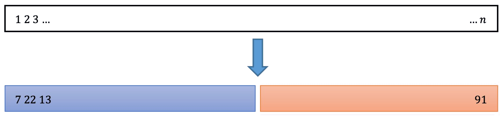
Ví dụ: Kiểm định
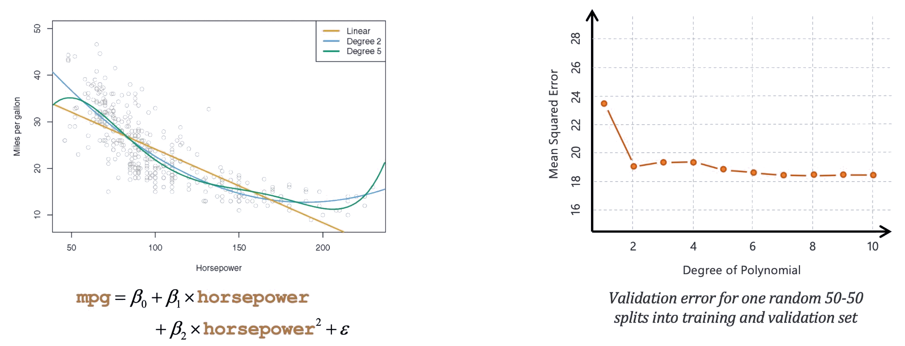
Sử dụng tập kiểm định
Quan sát:
- Lỗi kiểm tra biến động lớn theo cách chia.
- Bậc 2 cải thiện rõ rệt.
- Bậc cao hơn không mang lại lợi ích.
Mỗi đường = một lần chia ngẫu nhiên.
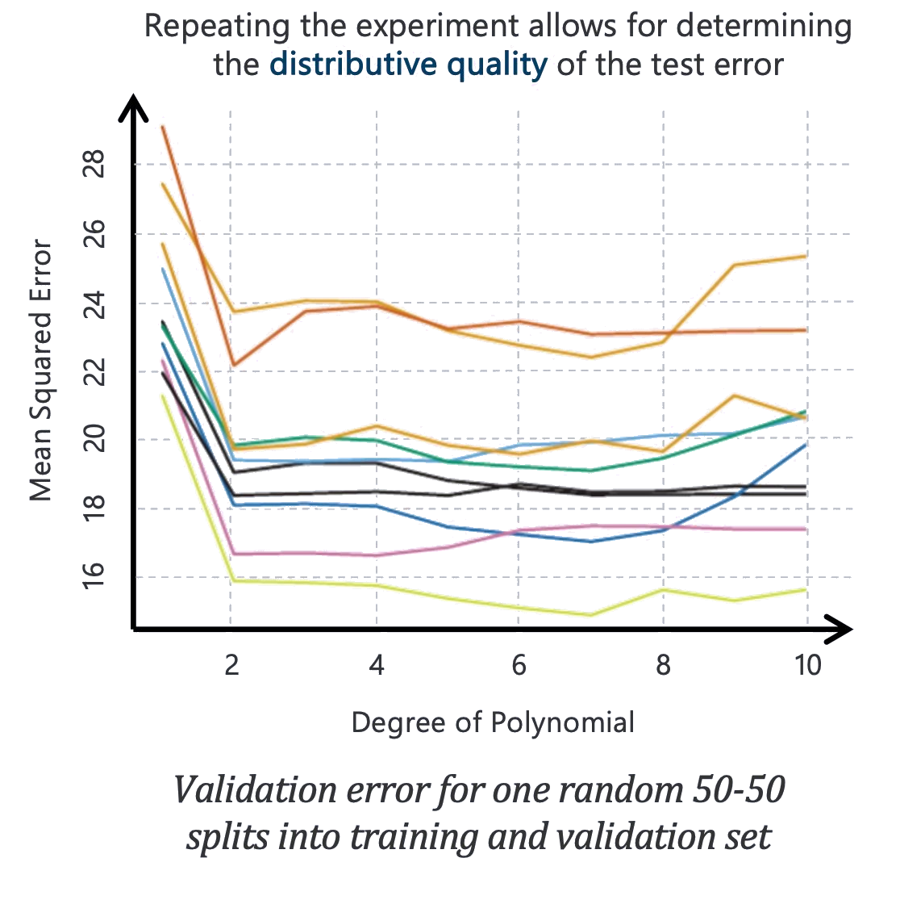
Sử dụng tập kiểm định
Hai vấn đề khi dùng 1 tập kiểm định:
- Phương sai cao — phụ thuộc phép chia ngẫu nhiên.
- Tập huấn luyện nhỏ → dưới-khớp → lỗi kiểm tra bị thổi phồng (overestimation).
→ Cần dùng dữ liệu hiệu quả hơn: Kiểm định chéo.
2.
Kiểm định chéo (Cross-Validation)
Leave-One-Out Cross-Validation (LOOCV)
Ý tưởng: mỗi lần giữ lại một điểm để kiểm tra.
- Train trên \(n-1\) mẫu → ít độ chệch.
- Test trên 1 điểm → phương sai cao.
- Lặp qua mọi điểm → trung bình hoá phương sai.
- Kết quả tất định — không phụ thuộc ngẫu nhiên.
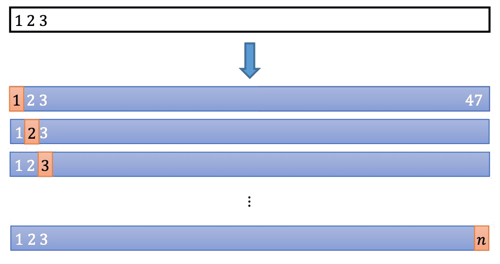
\(k\)-fold Cross-Validation
- Chia ngẫu nhiên dữ liệu thành \(k\) fold.
- Dùng \(k-1\) fold để train, 1 fold để test.
- Lặp \(k\) lần.
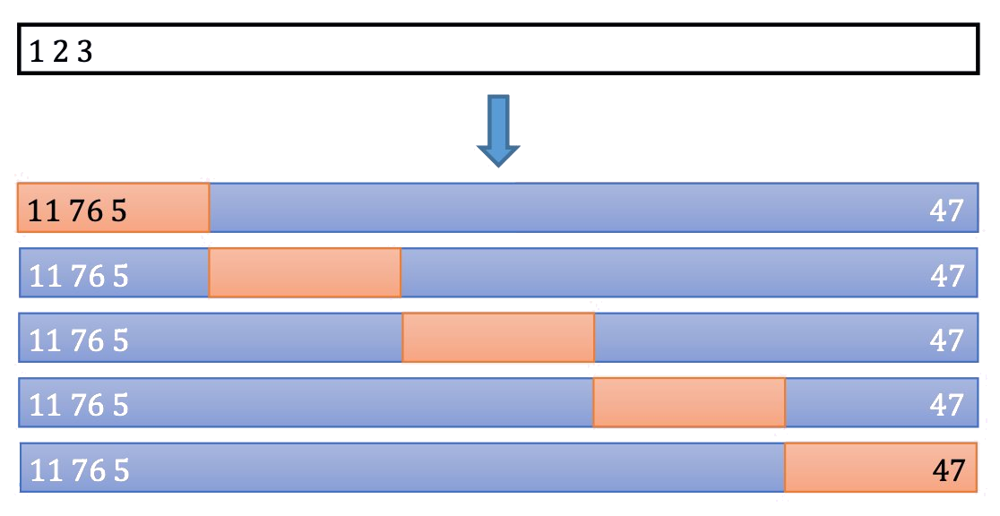
- Ước lượng lỗi: \( \text{CV}_{(k)} = \frac{1}{k}\sum_{i=1}^{k}\text{MSE}_i \)
- Thực tế dùng \(k = 5\) hoặc \(k = 10\).
- LOOCV = \(k\)-fold với \(k = n\).
- Hiệu quả tính toán hơn LOOCV; độ chệch cao hơn một chút.
\(k\)-fold CV — Giảm phương sai bằng cách lặp
- Lặp lại nhiều lần chia ngẫu nhiên rồi trung bình → giảm phương sai ước lượng.
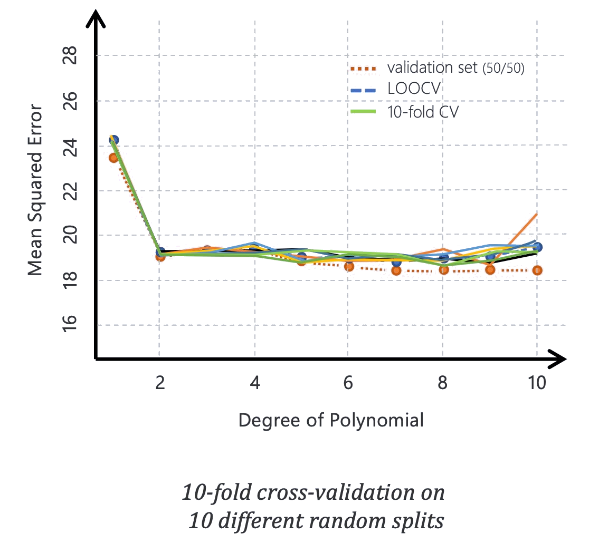
Ví dụ: Dữ liệu gần tuyến tính
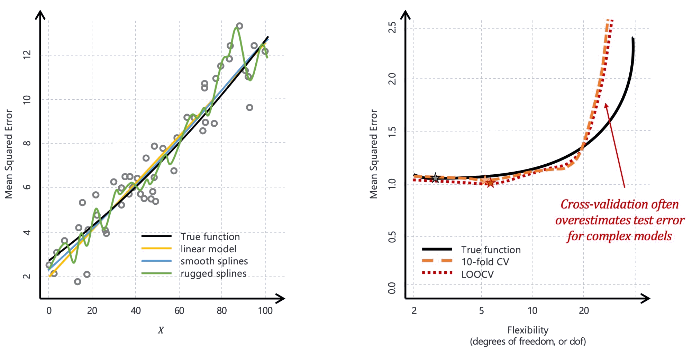
Ví dụ: Dữ liệu phi tuyến vừa

Ví dụ: Dữ liệu phi tuyến mạnh

\(k\)-fold CV — Chọn mô hình tối ưu
- Mục tiêu: tìm độ phức tạp tối ưu (vị trí cực tiểu lỗi).
- Lỗi kiểm tra dao động → cực tiểu khó xác định chính xác.
- CV cho ước lượng độ lệch chuẩn của lỗi.
- Nhiều mô hình có lỗi tương đương nhau.
Quy tắc: chọn mô hình đơn giản nhất trong phạm vi 1 SE từ điểm tối ưu.
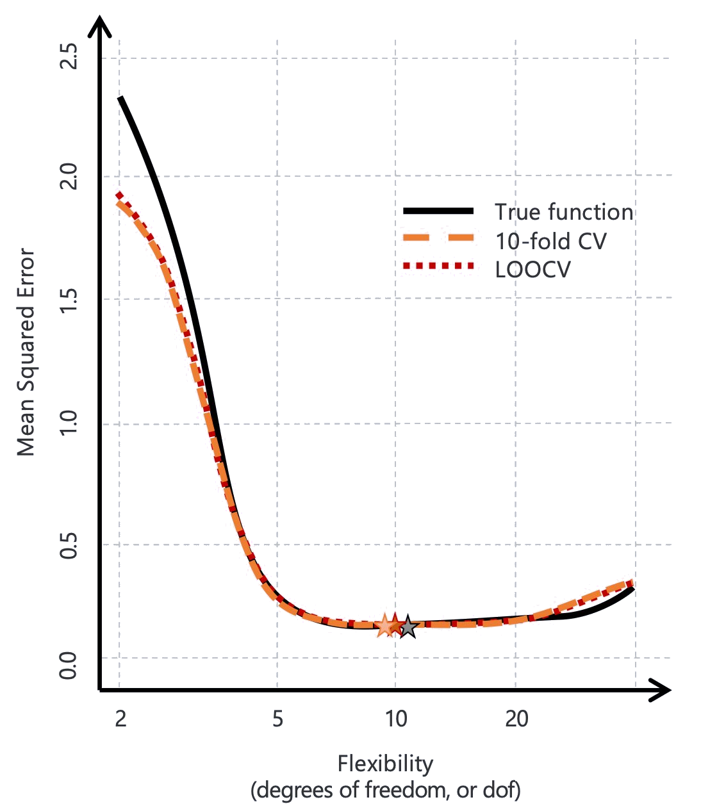
\(k\)-fold CV — Chọn mô hình tối ưu
- Mục tiêu: tìm độ phức tạp tối ưu (vị trí cực tiểu lỗi).
- Lỗi kiểm tra dao động → cực tiểu khó xác định chính xác.
- CV cho ước lượng độ lệch chuẩn của lỗi.
- Nhiều mô hình có lỗi tương đương nhau.
Quy tắc: chọn mô hình đơn giản nhất trong phạm vi 1 SE từ điểm tối ưu.
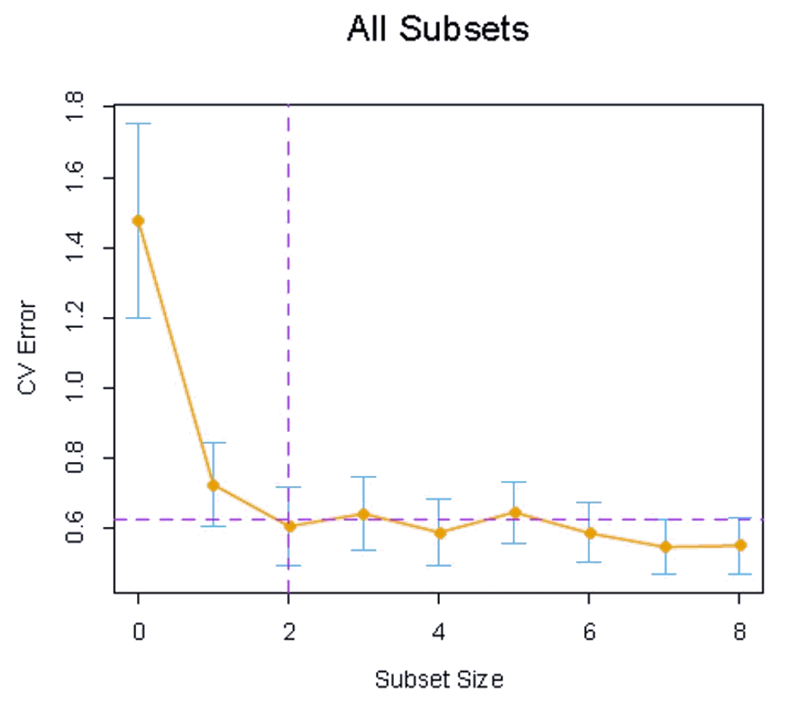
Độ chệch – Phương sai của \(k\)-fold CV
- LOOCV: tập train gần giống nhau → ước lượng tương quan cao (\(\rho \approx 1\)).
- \(k\)-fold CV: ít chồng lấp → \(\rho\) thấp → phương sai thấp hơn.
- Số hạng \(\rho\sigma^2\) không giảm khi tăng \(k\).
- LOOCV: \(\rho \to 1\) → số hạng đầu thống trị → phương sai lớn.
Ví dụ: CV cho Phân lớp

Ví dụ: CV cho Phân lớp
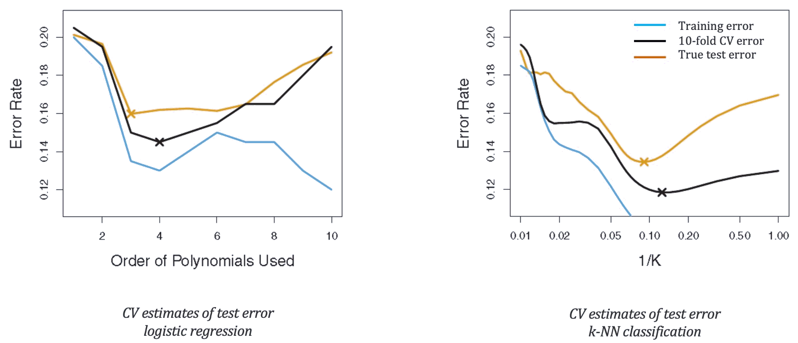
CV sai cách — Ví dụ cảnh báo
Bối cảnh: \(N=50\) mẫu, 2 lớp; \(p=5000\) đặc trưng Gaussian độc lập hoàn toàn với nhãn.
Lỗi Bayes = 50% — không thể phân lớp tốt hơn đoán ngẫu nhiên.
Quy trình đúng:
- Chọn đặc trưng tương quan cao nhất.
- Xây mô hình đa biến.
- Dùng CV chọn siêu tham số.
Làm sai:
- Chọn 100 đặc trưng trên toàn bộ \(N\) mẫu.
- Dùng 1-NN.
- Chạy CV (50 mô phỏng).
→ CV báo lỗi 3% thay vì 50%!
CV sai cách — Tại sao?
Nguyên nhân: rò rỉ dữ liệu (data leakage)
- Chọn đặc trưng trên toàn bộ dữ liệu → tập test đã bị "nhìn".
- CV chia sau bước lọc → test set không còn độc lập.
Quy tắc vàng: CV bao trùm toàn bộ chuỗi các bước.
Làm sai — Minh hoạ
Minh hoạ:
- Chọn 100 đặc trưng trên toàn bộ \(n\) mẫu.
- Lấy ngẫu nhiên 10 mẫu.
- Tính tương quan trên 10 mẫu đó.
Tương quan trung bình = 28% (thực tế = 0%).
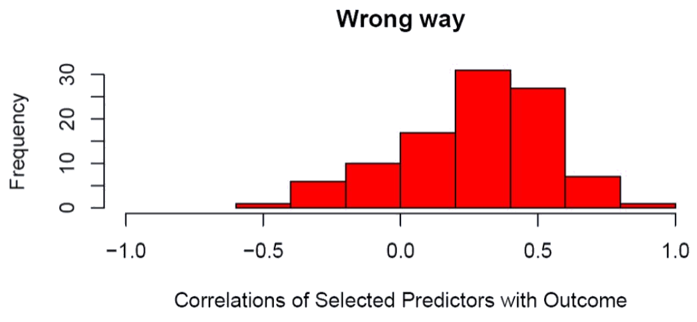
Làm đúng — CV cho toàn bộ chuỗi bước
- Chia mẫu thành \(K\) fold.
- Với mỗi \(k=1,\ldots,K\):
- Chọn đặc trưng trên các mẫu ngoài fold \(k\).
- Xây mô hình đa biến.
- Dự đoán nhãn trên fold \(k\).
- Tích lũy lỗi trên tất cả \(K\) fold.
CV phải bao trùm TOÀN BỘ chuỗi bước!
Gom cụm không dùng nhãn: có thể thực hiện trước khi chia fold.
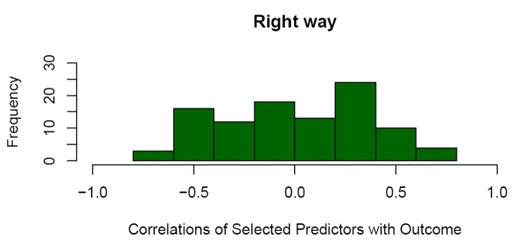
Mô hình Train – Validation – Test
Chia thành ba tập:
- Tập huấn luyện: khớp mô hình.
- Tập kiểm định: chọn mô hình.
- Tập kiểm tra: đánh giá mô hình cuối.
Tỷ lệ điển hình: 50% / 25% / 25%.
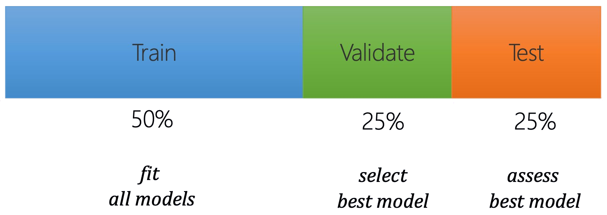
Kiểm định chéo lồng nhau (Nested CV)
Mục đích: tối ưu siêu tham số và đánh giá tách biệt nhau.
- CV trong (inner): điều chỉnh siêu tham số.
- CV ngoài (outer): đánh giá hiệu năng cuối.
Ước lượng lỗi thận trọng hơn — tập kiểm tra tách biệt cho từng vòng.
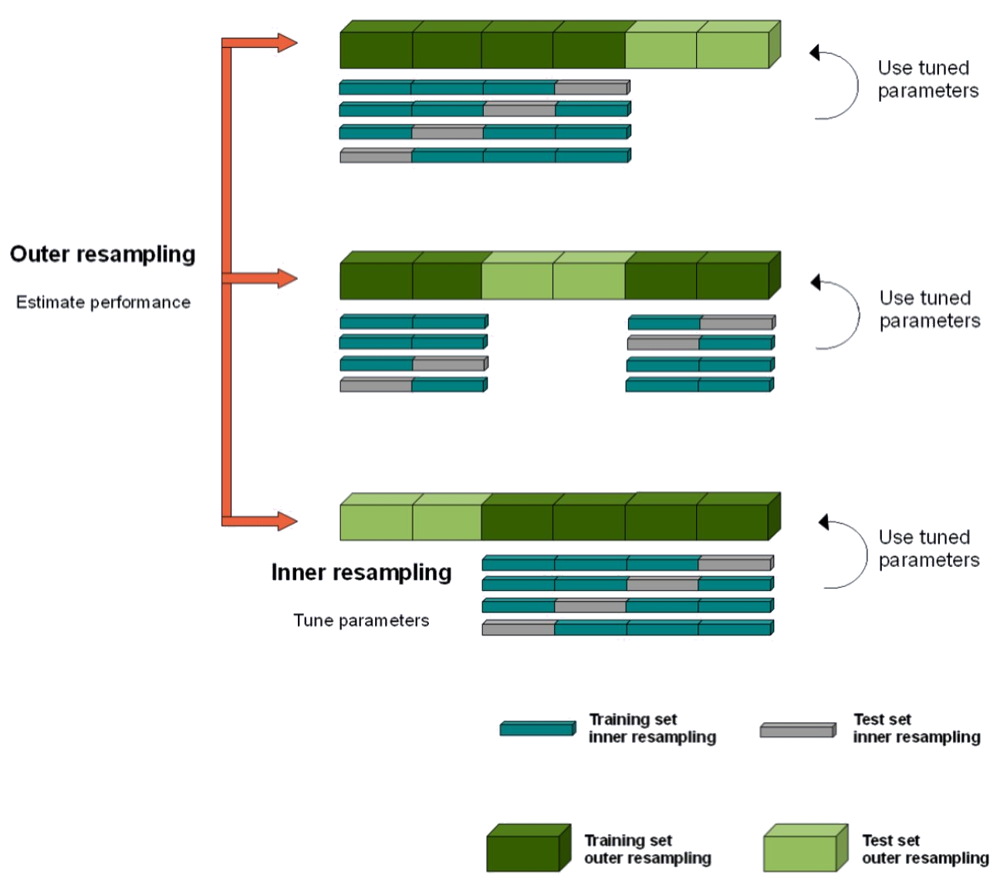
3.
Bootstrap
Bootstrap là gì?
- Dùng để định lượng độ không chắc chắn của một ước lượng.
- Áp dụng được cho mọi phương pháp — kể cả khi không có công thức lý thuyết.
Bootstrap là gì?
Ví dụ: đầu tư vào hai tài sản lợi suất \(X\) và \(Y\).
- Đầu tư tỷ lệ \(\alpha\) vào \(X\), \(1-\alpha\) vào \(Y\).
- Mục tiêu: chọn \(\alpha\) tối thiểu hoá \(\text{Var}(\alpha X + (1-\alpha)Y)\).
\(\hat{\alpha}\) phụ thuộc ước lượng mẫu — làm sao biết độ không chắc chắn của \(\hat{\alpha}\)?
Bootstrap là gì?
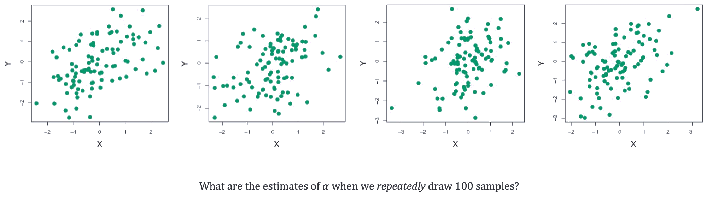
Bootstrap — Lặp lại lấy mẫu
Nếu có thể lấy mẫu nhiều lần từ phân phối thực:
- 1000 ước lượng \(\hat{\alpha}_1, \ldots, \hat{\alpha}_{1000}\).
- \(\bar{\hat{\alpha}} = 0.5996\); \(\widehat{\text{SE}}(\hat{\alpha}) = 0.083\).
Thực tế: không có mẫu mới → lấy mẫu lại (re-sample) từ dữ liệu gốc.
- \(B=1000\) tập bootstrap \(Z^{*1}, \ldots, Z^{*B}\), mỗi tập cỡ \(n\).
- \(\widehat{\text{SE}}_B(\hat{\alpha}) = \sqrt{\dfrac{1}{B-1}\sum_{b=1}^{B}\left(\hat{\alpha}^{*b} - \bar{\hat{\alpha}}^*\right)^2}\)
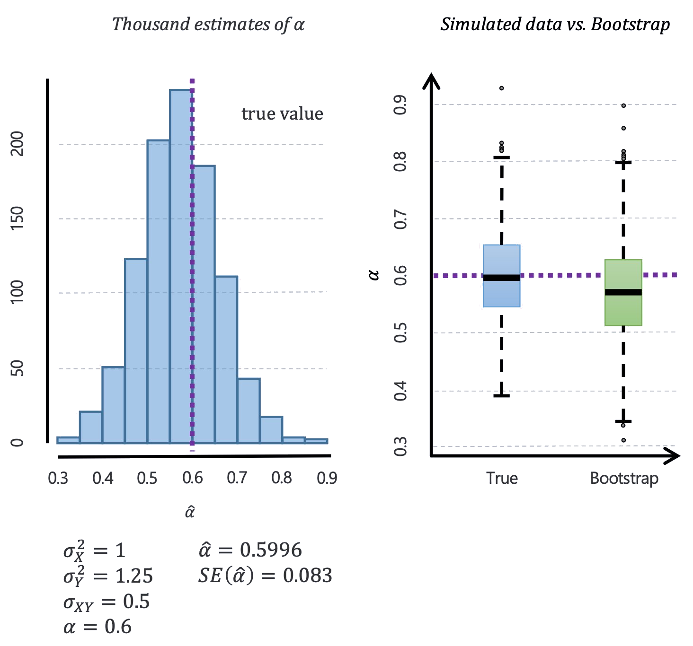
Ví dụ: Bootstrap trên tập dữ liệu nhỏ
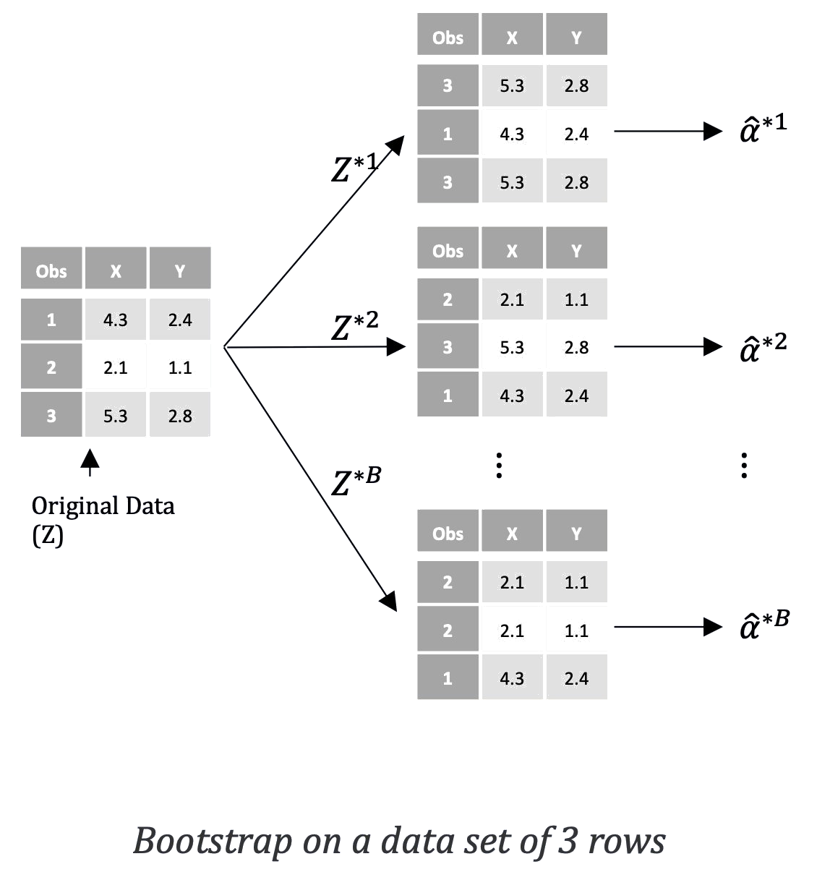
Bootstrap — Mẫu ngoài túi (Out-of-Bag)
- Mỗi tập bootstrap ≈ tập con: một số mẫu lặp lại, một số bị bỏ qua.
- Xác suất mẫu \(i\) được chọn: \[ \Pr\{i \in \text{bootstrap } b\} = 1 - \left(1 - \tfrac{1}{n}\right)^n \approx 1 - e^{-1} = 0.632 \]
- ~1/3 dữ liệu không xuất hiện → mẫu ngoài túi (OOB).
- Kiểm tra trên OOB ≈ 3-fold CV.
- Dùng mẫu in-bag để kiểm tra → chồng lấp → ước lượng lỗi quá thấp.
- Các tập bootstrap tương quan cao → phương sai ước lượng lỗi tăng.
Kết luận
- Luôn đánh giá trên dữ liệu độc lập với tập huấn luyện.
- Lấy mẫu lại (resampling): rút mẫu nhiều lần từ dữ liệu hiện có, dùng cho:
- Đánh giá độ biến động của mô hình.
- Đánh giá mô hình (model assessment): ước lượng lỗi kiểm tra.
- Lựa chọn mô hình (model selection): tối ưu hiệu năng.
- Có thể tốn kém tính toán — ngày nay chấp nhận được, ngoại trừ Deep Learning.
Khi nào dùng phương pháp nào?
| Tình huống | Phương pháp | Lý do |
|---|---|---|
| Dữ liệu lớn | Validation Set | Nhanh, đủ dữ liệu cho cả 3 tập |
| Dữ liệu vừa | k-fold CV (k = 5–10) | Cân bằng bias–variance |
| Dữ liệu nhỏ | LOOCV | Ít bias nhất |
| Cần khoảng tin cậy | Bootstrap | Định lượng trực tiếp độ không chắc chắn |
| Tối ưu siêu tham số + đánh giá cuối | Nested CV | Tránh ước lượng lỗi quá thấp |
Tài liệu tham khảo
- James, G., Witten, D., Hastie, T., Tibshirani, R. An Introduction to Statistical Learning (ISLR), 2nd ed., Springer, 2021.
- Hastie, T., Tibshirani, R., Friedman, J. The Elements of Statistical Learning (ESL), 2nd ed., Springer, 2009.
- Muandet, K. & Vreeken, J., Lecture slides, Saarland University.